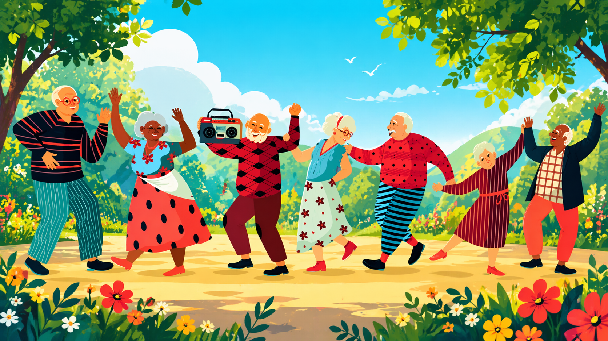

Δράσεις

Η Νεάτη θα είναι ένας πολυχώρος που συνδέει ηλικιωμένους, νέους, οικογένειες και συλλόγους, δημιουργώντας μια ζωντανή κοινότητα που προάγει τη συνεργασία και τη συνύπαρξη των γενεών. Παράλληλα, θα παρέχει ένα ευρύ φάσμα υπηρεσιών που καλύπτουν τη διαβίωση και φροντίδα ηλικιωμένων, τον αθλητισμό και την υγιή ζωή, τη μουσική, την τέχνη και τον πολιτισμό, καθώς και την εκπαίδευση και τη δια βίου μάθηση, ενώ θα ενισχύει ενεργά την τοπική κοινωνία μέσα από κοινωνικές υπηρεσίες και διαγενεακές δράσεις που φέρνουν τους ανθρώπους πιο κοντά.
Η κοινότητα θα διαθέτει:
• Κλειστό γυμναστήριο πολλαπλών χρήσεων
• Αίθουσα χορού
• Υπαίθριο γήπεδο
• Πάρκο και διάδρομο περπατήματος στον εξωτερικό χώρο
• Πισίνα
• Αποδυτήρια & ντουζ
• Κήπο και παρτέρια που θα φροντίζουν οι ηλικιωμένοι και τα παιδιά
• Αίθουσα μουσικής, κινηματογραφικών προβολών και θεάτρου
• Αίθουσα τέχνης -χειροτεχνίας και απασχόλησης
• Βιβλιοθήκη-αναγνωστήριο-αίθουσα υποστήριξης ξένων γλωσσών και Η/Υ
• Χώρος φύλαξης-απασχόλησης παιδιών
• Την στέγη αυτουποστηριζόμενης διαβίωσης ηλικιωμένων (Σπιτάκια διαβίωσης-Υποδοχή, γραφείο κοινωνικού λειτουργού, ιατρείο ,νοσηλευτικό σταθμό. Κοινόχρηστοι χώροι με κουζίνα, τραπεζαρία, αίθουσα δραστηριοτήτων και ψυχαγωγίας, χώρο αποκατάστασης και ενδυνάμωσης, δωμάτια φιλοξενίας)
Η Νεάτη θα παρέχει υπηρεσίες:
Στους ηλικιωμένους:
• Στέγαση
• Κοινωνικοποίηση, ενεργό συμμετοχή
• Φυσιοθεραπεία / άσκηση χαμηλής έντασης
• Δημιουργικά εργαστήρια
• Διαγενειακές δράσεις (κηπουρική, μουσική, διατήρηση παραδόσεων και τοπικών εθιμών)
Στην κοινότητα:
• Αθλητικές δραστηριότητες
• Μουσικά και χορευτικά εργαστήρια
• Εκδηλώσεις & συναυλίες
• Παιδικές δραστηριότητες
• Εθελοντισμό και δια βίου μάθηση